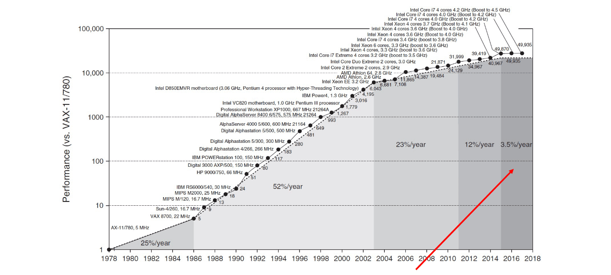
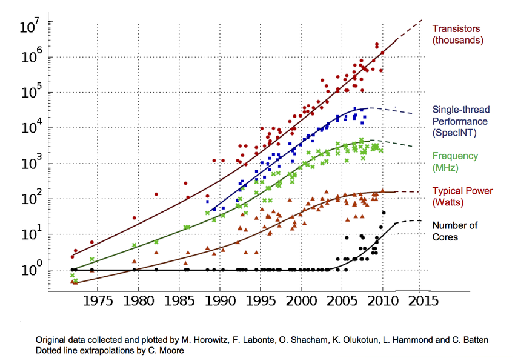

Invenção do Microprocessador
Em 1971, a Intel Corporation lançou o revolucionário microprocessador comercial, o Intel 4004, marcando um marco significativo na evolução da tecnologia. Este dispositivo pioneiro destacou-se pela sua integração em larga escala,
introduzindo a tecnologia de porta de silício MOS (SGT) de forma notável, o
CPU operava com o clock máximo de 740 KHz e podia calcular até 92 mil instruções por segundo,ou seja, cada instrução gastava cerca de 11 microssegundos.
Em comparação com as tecnologias estabelecidas da época, o SGT integrado
no 4004 permitiu a inclusão de duas vezes mais transistores na mesma área de
chip, operando a uma velocidade cinco vezes maior. Esse avanço notável em desempenho abriu caminho para a criação de CPUs de chip único, substituindo as CPUs multi-chip existentes.
O design inovador do chip 4004 não apenas proporcionou uma mudança revolucionária na eficiência e capacidade de processamento, mas também estabeleceu
um modelo para a aplicação bem-sucedida do SGT em circuitos complexos de
lógica e memória. Esse paradigma acelerou significativamente a aceitação global
do SGT na indústria de semicondutores, promovendo uma transição crucial na
forma como os chips eram projetados e fabricados. O legado do Intel 4004 ecoa
como um ponto de partida fundamental que impulsionou o desenvolvimento contínuo da tecnologia de microprocessadores e moldou o cenário da computação
moderna.
Processo de Criação
O processo começa com a criação de um projeto avançado de circuito, utilizando areia como matéria-prima para obter silício através de um processo de
derretimento. O silício é purificado e transformado em grandes blocos, que são
cortados em discos semelhantes a discos de vinil. Esses discos são cortados em
ambientes esterilizados e recebem uma camada de líquido foto resistente. A luz
ultravioleta é então usada para gravar os circuitos na superfície dos discos, que
são posteriormente tratados para criar sulcos.
O silício, sendo um semicondutor, é dopado com átomos para alterar sua
condutividade e recebe uma camada selante para evitar curtos-circuitos. Os
sulcos são preenchidos com cobre, os excessos são removidos, e a superfície é
uniformizada, formando os circuitos. Esse processo demora até dois meses.
Após todas essas etapas, o chip está quase pronto. O disco de silício é cortado em pequenos pedaços (wafer), cada um colocado sobre uma base metálica
chamada "substrate". O processador resultante está pronto para ser conectado
a uma placa-mãe por meio de pinos metálicos. Testes são realizados entre as
etapas, e apenas os produtos aprovados continuam na linha de produção. O
processador é embalado somente após passar por vários testes para garantir a
qualidade. Vale ressaltar que este é um processo simplificado, pois há fases adicionais, como a inserção de memória cache, fabricação de transistores e adição de
componentes extras, todas utilizando maquinário de alta tecnologia, tornando
a produção desses dispositivos custosa.
Tamanho e Eficiência
Ao explorar o universo das CPUs, um tema recorrente é o tamanho dos
seus componentes em termos de nanômetros, representando a escala da menor
linha no circuito principal do processador. Na primeira geração de microprocessadores, a técnica de fabricação utilizada tinha uma escala de 10 μm. Para
visualizar, a menor linha no circuito do Intel 4004 seria um pouco maior do que
uma hemácia, as células sanguíneas vermelhas. A nomenclatura dessa técnica
não apenas descreve o tamanho, mas também define a largura da "perninha" dos
diminutos transistores.
Essa dimensão, especificamente referente à comporta (gate) do transistor,
desempenha um papel crucial, influenciando a velocidade do componente e a
proximidade entre eles. Em termos simples, menor é melhor quando se trata do
número de nanômetros num CPU, pois isso permite a inclusão de mais transistors, resultando com desempenho e eficiência melhorados.
Abaixo encontra-se um gráfico que detalha a evolução do tamanho dos CPUs,
permitindo visualizar o quanto este evoluiu num pequeno espaço de tempo.
Leis de Moore e Dennard
Lei de Moore
Na década de 1960, Moore fez a previsão de que a cada 18 meses, a quantidade de transistores em uma área de silício dobraria. Durante cerca de duas
décadas, essa previsão se materializou, resultando em um crescimento exponencial notável. Entretanto, por volta de 2003, começou a surgir um declínio
perceptível nessa tendência. Ao longo dos últimos 50 anos, a Lei de Moore foi a
força impulsionadora por trás dos avanços tecnológicos, possibilitando melhorias
significativas no desempenho e eficiência energética sem a necessidade de alterar
o software. Em outras palavras, tínhamos a vantagem de obter processadores
duas vezes mais rápidos pelo mesmo custo, graças a esse ritmo constante de
inovação.

Dennard Scalling
Assim como na Lei de Moore, o Dennard Scaling estabelece uma relação
crucial entre a energia fornecida ao sistema e o tamanho dos transistores. Em
termos simples, essa lei indica que, à medida que os transistores diminuem de
tamanho, a potência por densidade permanece constante, garantindo que o uso
de energia seja proporcional à área ocupada pelos transistores. No entanto, observamos que essa tendência não se mantém evidente nos dias de hoje, indicando
uma estagnação na frequência dos relógios das CPUs. Embora existam tecnologias alternativas, como CMOS, atualmente em uso, nenhuma delas opera da
mesma maneira que o Dennard Scaling. Esta mudança sinaliza um momento
crucial na evolução da tecnologia de processadores, onde os paradigmas estabelecidos estão sendo desafiados, e a busca por soluções inovadoras torna-se
imperativa para superar os desafios energéticos e de desempenho que surgem
nesse cenário em evolução.
